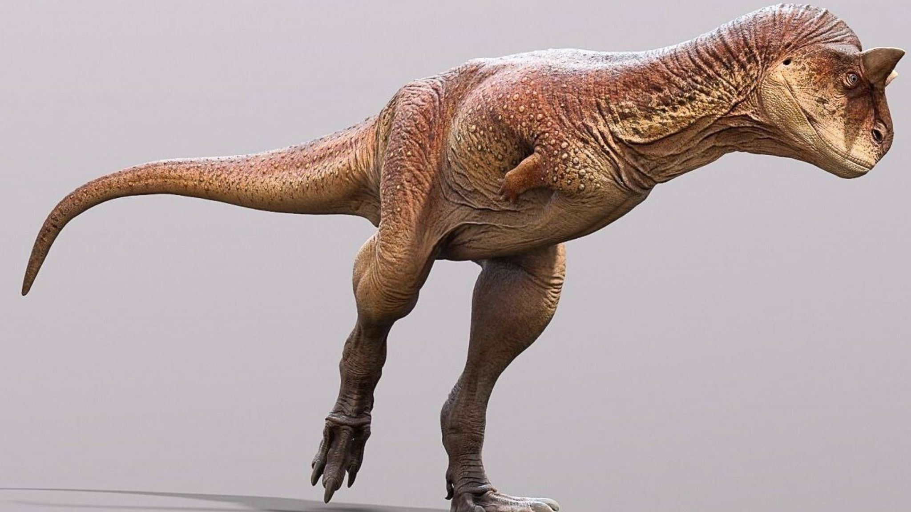
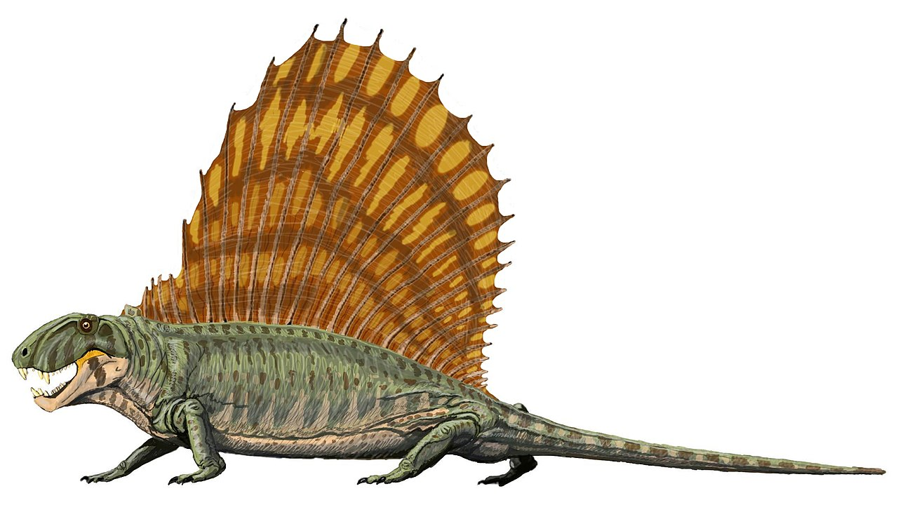
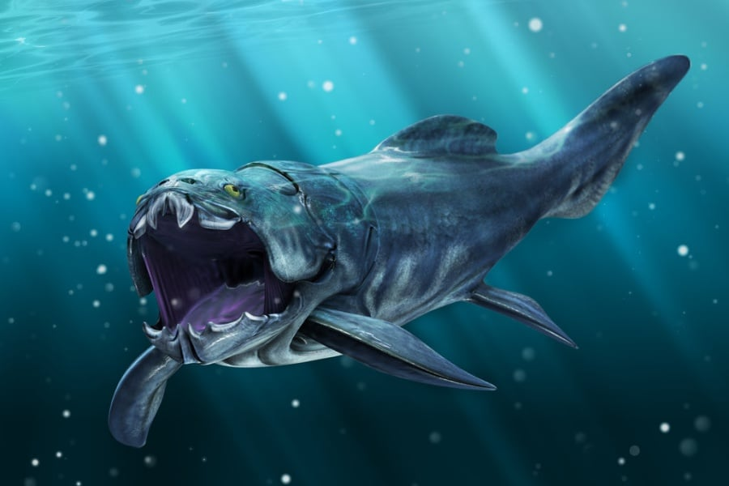
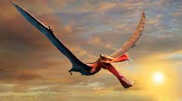

Plesiosaurus
Plesiosaurus (del griego: πλησιος [plesios], 'cercano a' y σαυρος [sauros], 'lagarto'), o plesiosaurio, es un género extinto de gran reptil sauropterigio marino que vivió a principios del período Jurásico, y es conocido de esqueletos casi completos del Lias de Inglaterra. Se distingue por su pequeña cabeza, su cuello largo y delgado, un cuerpo ancho como el de una tortuga, una cola corta, y dos pares de grandes aletas alargadas. Este animal dio nombre al orden Plesiosauria, de la cual es un miembro primitivo, pero típico. P. brachypterygius, P. guilielmiiperatoris y P. tournemirensis fueron asignados a los nuevos géneros Hydrorion, Seeleyosaurus y Occitanosaurus.
Descripción
Comparado a otros géneros de plesiosaurios, Plesiosaurus tenía una cabeza pequeña. La órbita se sitúa aproximadamente a la mitad del cráneo con un rostro súbitamente bajo y triangular y el tope del cráneo siendo alto, con una cresta sagital relativamente estrecha.1 Las barras postorbitales formaban la parte más amplia del cráneo. El gran foramen pineal ocupaba el punto central entre estas barras en el medio del techo del cráneo. Tanto la órbita como la fenestra temporal son casi circulares y prácticamente del mismo tamaño. Las narinas exteriores se superponen a las internas y no son explicítamente sugerentes de olfato subacuático.1 Dichas capacidades han sido sugeridas para el pliosaurio Rhomaleosaurus.2 Plesiosaurus tenía una unión posterior de los pterigoideos y el basioccipital típica de los plesiosaurios.1 Sin embargo, la conexión entre el paladar y el cráneo estaba incompletamente reforzada. Esta conexión es menos robusta que la de los pliosaurios Rhomaleosaurus y Pliosaurus.3 Los huesos del paladar son delgados, pero sin una fenestra suborbital. El ramo mandibular forma una "V" casi perfecta en un ángulo de casi 45° con solo una leve curvatura medial.4 El extremo anterior del hueso dentario es amplio y robusto. Una fuertemente fusionada sínfisis apuntando como una cuchara hacia abajo, incorporaba 2,5 pequeñas cavidades en cada rama.5 A Plesiosaurus le ha sido tradicionalmente adjudicado un único diente en la sínfisis, así como a otros géneros de cuello largo.6 Los dientes de Plesiosaurus son simples, conos en forma de aguja levemente curvados y circulares en sección transversal.4 Los dientes son delgados y afilados con finas estrías longitudinales. Dichas estrías corrían desde la cavidad de la raíz hasta cerca de la punta del diente. Todos los dientes son procumbentes, especialmente aquellos más cercanos a la parte anterior, yaciendo cerca de 10-15° sobre el horizontal.
Plesiosaurus era un plesiosaurio de talla media que crecía entre 3 a 5 metros de longitud. Tenía aproximadamente 40 vértebras cervicales. Los centros de las vértebras son relativamente alargados y su longitud es usualmente algo mayor que su altura pero igualando o excediendo su ancho.7 También poseen caras articulares que son levemente cóncavas y en forma de riñón, con bordes redondeados y levemente rugosos. Los forámenes subcentrales, los cuales son agujeros sobre la superficie ventral del centro de la vértebra, son pequeños y alargados con levs bordes o bultos entre ellos. Las costillas delanteras son de forma escotillada con procesos anteriores y posteriores casi iguales y las espinas neurales cervicales son redondeadas.7 Las costillas cervicales son aparentemente de cabeza doble y sus facetas son alargadas y apenas espaciadas anteriormente con un pasaje longitudinal o foramen entre ellas. Cerca de 21 vértebras corresponden a las dorsales (de la espalda) y tenía al menos tres vértebras sacrales.8 Posee al menos 28 vértebras caudales y unas pocas más pudieron haber estado en el final de la cola. Las espinas neurales del tórax son altas y algo rectangulares de perfil con puntas transversalmente engrosadas. Las costillas dorsales solo poseen una cabeza, son gruesas y paquiostóticas como en muchos plesiosaurios.8 Las costillas sacrales son cortas, robustas y romas en ambos extremos. Las vértebras caudales son comparativamente menos notables con los arcos fusionados en los adultos pero sus costillas y cheurones son libres. El espacio entre los arcos de las costillas desde el margen posterior del coracoides al pubis está llenos de gastralias paquiostóticas.
Los miembros formaban aletas alargadas, en forma de remo con cinco dígitos completos, aunque cada uno consiste de un número muy grande de falanges. Algunas impresiones de piel descubiertas sugieren que era lisa, no escamosa. Los miembros delanteros de Plesiosaurus parecen ser típicos para un plesiosaurio con un arco clavicular fusionado que yace en el medio de la escápula como es el caso en todos los sauropterigios. La lámina dorsal escapular es delgada y algo rectangular encontrándose con la placa ventral plate en un marcado ángulo y el ramo del glenoide es robusto.8 El glenoide es compartido por la escápula y el coracoides, como en todos los plesiosaurios, con el coracoides siendo mucho más largo que la escápula. Los miembros anteriores son alargados y tienen una estructura relativamente estrecha. Son más estrechos que los de muchos otros plesiosaurios. Adicionalmente, Plesiosaurus tenía un húmero distinguido por una profunda curvatura en el eje propodial, un rasgo generalmente ausente en otros plesiosaurios9 pero que retenían muchos miembros basales de Sauropterygia.10 En P. dolichodeirus una somera pero marcada ranura longitudinal o surco interepipodial está en la superficie ventral del húmero en individuos maduros. Prominentes facetas epipodiales están también desarrolladas en los adultos.11 El cúbito o ulna en forma de placa tiene forma de media luna y es muy ancho, mientras que el radio es robusto y en forma de columna. De los seis carpos, los carpos ulnares y los intermedios son los más largos, siendo los primeros casi iguales en tamaño.11 Los miembros posteriores son menores que los anteriores en los individuos adultos pero esto no es tan obvio en los ejemplares menores.12 El fémur es casi simétrico longitudinalmente mientras que la esquina posterodistal es levemente que la anterior. El eje femoral es recto y tanto los bordes posteriores y anteriores son cóncavos.13 La tibia y el peroné son similares en tamaño, pero la tibia es más robusta y tiene un extremo proximal más ancho que el distal, mientras que el peroné tiene forma de medialuna. Los miembros posteriores son también largos y estrechos.
Inicio |
 Carnotaurus |
 Dimetrodon |
|  Dunkleosteus |
 Pterodáctilo |
 Sarcosuchus |